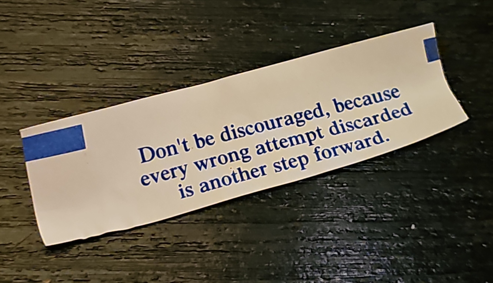
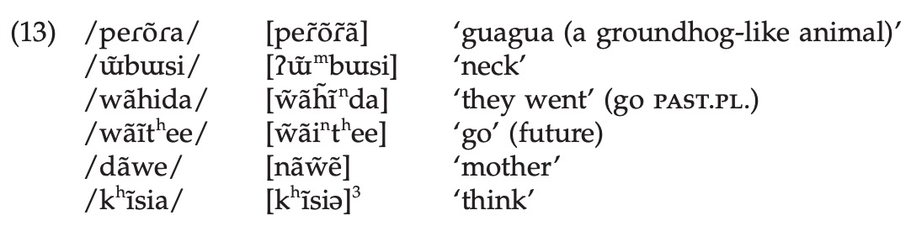
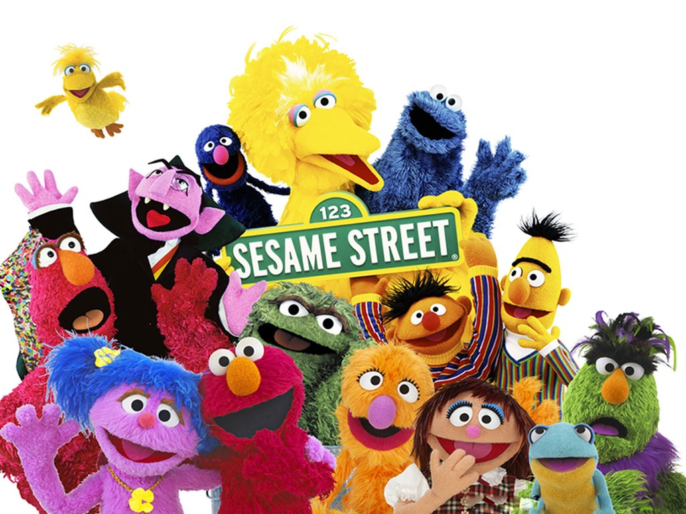
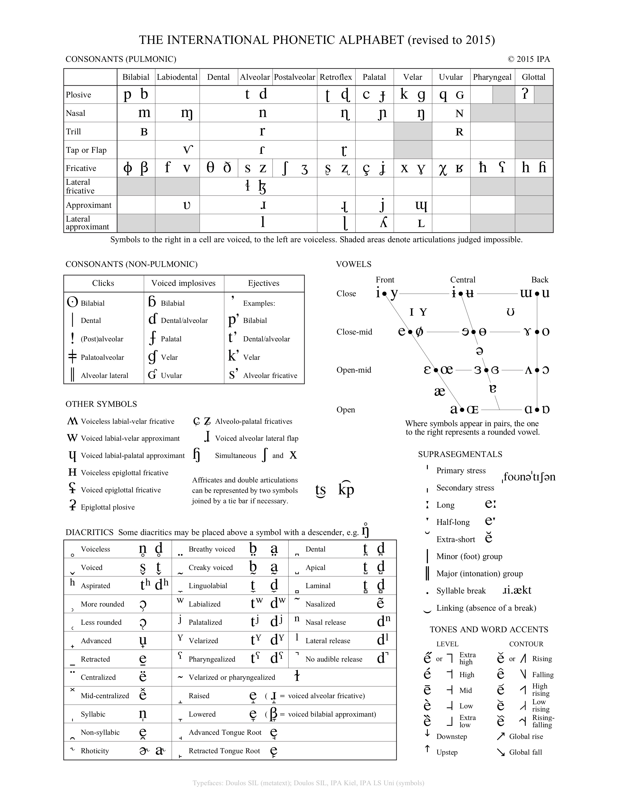

### Study Groups aren't always a good idea! - Sometimes it can help to teach and learn from others - Don't trust an answer you don't fully understand - "What's the answer?" is dangerous, "Why is that the answer?" might save you. - Bad answers often 'go viral' - I can usually tell a study group by the patterns of weird errors - "Somebody who was very wrong thought they were very right!" - The very best study group is office hours! --- # Phonology: The Sound Patterns of Language are awesome ### Matt Zaslansky - LIGN 101 --- ### Today's Plan - Review - Common Phonological Processes - Natural Classes - Let's work some problems! --- # Reviewing Phonemic Analysis --- ### From last time... --- ## Cool. So... how do we do phonemic analysis? --- ### Step 0: Check for minimal pairs If you have a minimal pair where the meaning changes, the sounds are different phonemes and your work is done. Always. --- ### If you have a minimal pair, the sounds are different phonemes and your work is done. <img class="r-stretch" src="img/bankvault.jpg"> --- ### Phonemic Analysis in four easy steps! - 0: Check for Minimal Pairs, if none... - 1: Collect all the environments the sound you’re interested in can occur in - 2: State the distribution of the sounds. - 3: Decide which allophone is the basic *underlying* form - 4: Write rules to derive the other allophone(s) from it based on environment --- ### 0: Check for Minimal Pairs, if none... - Please. PLEASE. --- ### 1: Collect all the environments the sound you’re interested in can occur in - Write down what follows and precedes them - Use __ to help focus your brain on the context --- ### 2: State the distribution of the sounds. - "This one occurs before/after/around/near __" - Sometimes you can only describe where one happens - Test hypotheses! ---  --- ### 3: Decide which allophone is the basic *underlying* form - Choose the one you can't predict - Often it's the “everywhere else” allophone --- ### 4: Write rules to derive the other allophone(s) from it based on environment - We'll talk about writing rules more shortly --- ### All sorts of environments trigger changes - Adjacent sound or sounds - Adjacent *types* of sound - Word boundaries - Syllable boundaries - Sounds or later earlier in the word - This is a bit more rare, but really neat! --- # Phonological Rules --- ### So, you've figured out that sounds are allophones of the same phoneme! - They're in a *complementary* distribution - You can predict which one will show up based on the environment - **How do I express that prediction to somebody else?** --- ### Phonological Rules You describe the distribution of the allophones of a phoneme with phonological rules --- ### An [r] in English? <video class="r-stretch" controls width=700px src="video/jynxi.mp4"></video> Video is from [Jynxi](https://www.youtube.com/watch?v=Lot-jfKxr74) - Note: This doesn't mean you're ever going to transcribe [r] in this class for English! You almost never should. --- <section class="clicker"></section> ### So when Jynxi says [fɪɹst klɪpərə ivnɪŋ], which is a plausible rule for [r]? A) [r] -> /ɹ/ / V__V B) /ɹ/ -> [r] / V__V C) /d/ -> [r] / V__V D) /d/ -> [r] / C__C E) [r] -> /d/ / C__C --- ### So when Jynxi says [fɪɹst klɪpərə ivnɪŋ], which is a plausible rule for [r]? A) [r] -> /ɹ/ / V__V B) /ɹ/ -> [r] / V__V C) <correct>/d/ -> [r] / V__V</correct> D) /d/ -> [r] / C__C E) [r] -> /d/ / C__C --- ### Phonological Rule Format - "X turns into Y in environment Z" - “X -> Y” means “X turns into Y” - -> is an arrow, but just easier to type. - Then the “/” which means “in the environment” - Then you add a blank, representing where the sound goes that's getting transformed “__” - ... And you position that blank relative to the conditioning environment. --- ### All of this is on your quick reference chart - Use it! --- ### Often, you'll describe entire groups of sounds in your rules - These groups will all share a 'feature' - 'voiceless', 'velar', 'consonants', 'high vowels' - [stops] -> [fricatives] / __[back vowels] - Any group of sounds which share an articulatory feature can be called a 'natural class' - We'll talk more about these next time --- ### You'll hear about 'allomorphs' - These are chunks of meaning ('morphemes') like the plural /s/ or past tense /d/ which change depending on nearby sounds - The English plural "s" can be [s], [z], or [ɪz] - Cats, Dogs, and Dishes - The English past tense "ed" can be [t], [d], or [əd] - "Walked", "Buzzed", "Rounded" --- ## A Phoneme - The Smallest Contrastive Unit of Sound in a language, in a *contrastive distribution* with other phonemes in the language - Changing phonemes changes meanings, and is perceptible (and often confusing!) for listeners of a language - Changing between phonemes creates... --- ## Minimal Pairs - Two words with different meanings which differ by a single sound, indicating that those sounds are **different phonemes** - Think "boot" and "boon", or "Niña" and "Piña" --- ## Allophones of a Phoneme - Different surface-level expressions of the same phoneme, which *alternate* depending on the environment, in a *complementary distribution* - Which allophone you get is dictated by a rule - Think about [ej] and [ej:] or the many realizations of /t/ in English --- ## Underlying Form - The sound which you decide is the 'base' form, from which rules create the other allophones - This is a *strategic* decision. Choose the form that lets you write the fewest, cleanest rules. --- ## Allomorphs - Different versions of morphemes which are swapped predictably based on the sound environment. - Think the many plurals of English, --- ## Free Variation - Where a group of sounds can replace each other, or not, and there's no pattern, just chaos - **Don't worry about this for LIGN 101, we won't give you Free Variation on homeworks or exams** --- ### Sounds have relationships with one another - They can be *independent* phonemes - They can be *rule-governed* allophones - They can *chaotically switching* free variation --- ### Signs that two sounds represent different phonemes - **Minimal pairs** - Speakers hear them as 'entirely distinct' - There's *no pattern besides changes in meaning which predicts their distribution* --- ### Signs that two sounds are allophones of the same phoneme - Changing the environment causes the sounds to *alternate* - The two sounds are predictable - "Huh, this one always occurs in that environment!" - Speakers hear switching between them as 'a different way of saying' the same thing - Or maybe don't hear the difference at all --- ### We write phonological rules to describe where allophones occur - These rules tell us *when* some or all of the forms occur --- ### These rules have formatting conventions - '\_' replaces the sound which is being changed - '\#' means 'word boundaries' - Think of 'cat' as being like [\#kæt\#] - \_\# is at the end of a word - \#\_ is at the start of a word --- ### Aside: Schwa is always an allophone of another vowel - Schwa (/ə/) is a reduced form of a different vowel - Photograph, the, con'vict - Wedge (/ʌ/) is a specific vowel, with its own identity - Not a reduced form of something else --- ### So, now we know how alternations work! --- ### ... but why do alternations occur anyways? --- # Common Phonological Processes --- ### So, now we know how to describe all these crazy rules... - ## ... but what do languages actually DO with them?! --- ### Four Common Types of Phonological Processes - Assimilation - Dissimilation - Insertion / Epenthesis - Deletion / Elision --- ### 1) Assimilation - When sounds change to become more like one another - This is basically Peer Pressure - --- ### Example: Nasal Place Assimilation - "Come on, we're all being dental, you should try it too!" - "Pine thugs" -> [pajn̪ θʌgz] - "Pine guys" -> [pajŋ gajz] --- ### Extreme Example: Nasal Harmony - When other phones in a word change to match the nasality of a nasal segment -  - "If I'm going to be nasal, you're all going to be nasal with me, damnit!" - <small>From Epena Pedee, in Rose, S. and Walker, R. (2011). Harmony Systems. In The Handbook of Phonological Theory (eds J. Goldsmith, J. Riggle and A. C. Yu). doi:10.1002/9781444343069.ch8 </small> - This also happens with vowels (e.g. Turkish) and elsewhere --- ### Extreme Example: Vowel Harmony When vowels change to match the other vowels in the word --- ### Turkish has back-front vowel harmony This means that vowels in a word must be either *all back* or *all front* <img class="r-stretch" width="600" src="lotwimg/turkishvowels.png"> --- <lang>Turkish</lang><br><ldata>Turkic - Turkey</ldata> *Türkiye’-dir* - ‘it is Turkey’ * *kapı-dır* - ‘it is the door’ * *gül-dür* - 'it is the rose’ * *palto-dur* - ‘it is the coat’ * *The vowel in the last syllable changes depending on the other vowels!* --- ### 2) Dissimilation - When sounds change to become *less* like one another - --- ### Example: Liquid Dissimilation - The third rural bird juror murderer demurred. - "Colonel" is pronounced /kəɹnəl/ - "Purple" comes from "purpure" - “surprise” /səɹpɹajz/ is usually /səpɹajz/, same with “berserk” and "february" - This is deletion, done for dissimilation reasons --- ### 3) Insertion / Epenthesis - When a sound pops up to prevent an awkward or undesirable combination - Basically, showing up on a friend's bad date - --- ### Example: Allomorphs with vowels - /dɪʃ/ + /s/ -> [dɪʃɪz] - /ɹat/ + /d/ -> [ɹaɾɪd] - The vowel 'pops in' to stop /ʃs/ and /td/ from being a thing - Languages also LOVE to epenthesize to stop VV --- ### 4) Deletion / Elision - When a sound is removed to stop an awkward or undesirable combination from occurring - Basically, uninviting your friend's ex from the party - --- ### Example: Elision in English - Fifth, /fɪfθs/ -> [fɪθs] - Family, /fæmɪli/ -> [fæmli] - Natural, /næt͡ʃəɹəl/ -> [næt͡ʃɹəl] --- ### Four Common Types of Phonological Processes - Assimilation (Peer Pressure) - Dissimilation (Rebellion) - Insertion / Epenthesis (Showing up on a friend's date) - Deletion / Elision (Uninviting and unfriending) --- ### There are other phonological processes - They're all awesome - ... but those four are super common --- ### I'm humanizing these patterns for a reason - Before you start looking for a pattern, think about what’s changing, arising, or deleting, and what kinds of things might trigger it --- <section class="clicker"></section> ### If a language changes /d/ to [t] next to a voiceless C, that's an example of... A) Assimilation B) Dissimilation C) Insertion / Epenthesis D) Deletion / Elision --- ### If a language changes /d/ to [t] next to a voiceless C, that's an example of... A) <correct>Assimilation</correct> B) Dissimilation C) Insertion / Epenthesis D) Deletion / Elision --- ### What kinds of things trigger these changes? --- # Natural Classes --- ### Plural Patterns in English - [z] after /j g d ɹ n w b m ð l i aj v u ow/ - [s] after /t p k f θ/ - [ɪz] after /tʃ dʒ s ʃ z/ --- ### A few reasons why listing sounds is no good - Lists are *inefficient* - Lists treat these phenomena as *unmotivated* - Lists *disguise relationships* among sounds - Lists aren't *graceful* --- ### Relationships among speech sounds are real - Phonology is not just algebra with symbols - Your IPA chart is not just an arbitrary scattering of sounds - Phonetic motivation for changes is often based on geography --- ### Relationships can be described in many ways - ... but the easiest way to start thinking is in terms of... --- # Natural Classes! --- ### Let's play a game!  --- ### One of these sounds is not like the other... ## /t/ /k/ /p/ /s/ - /s/ is the only fricative, all the rest are voiceless stops --- ## /m/ /n/ /ŋ/ /b/ - /b/ is the only oral sound, all the rest are nasal sounds --- ## /b/ /a/ /ŋ/ /i/ /s/ - /s/ is the only voiceless sound, all the rest are voiced sounds - /n/ is the only nasal sound, all the rest are oral --- ## /l/ /s/ /ŋ/ /j/ /i/ - /i/ is the only vowel, all the rest are consonants - /s/ is the only voiceless sound - /ŋ/ is the only nasal --- ## /i/ /ɪ/ /ɛ/ /æ/ /ɔ/ - /ɔ/ is the only back vowel, all the rest are front vowels - /ɔ/ is the only rounded vowel, all the rest are unrounded --- ## /t/ /n/ /s/ /z/ /k/ - /k/ is the only non-alveolar sound - /n/ is the only nasal sound, all the rest are oral --- ## /p/ /t/ /k/ /b/ - /b/ is the only voiced stop --- ## Natural Class A set of speech sounds in a given language that is able to be uniquely, completely, and succinctly described in terms of the shared phonetic (“natural”) properties of its members. ---  --- ### Natural Class Examples - Voiceless stops (English & Spanish): [p, t, k] - Voiced fricatives (English): [v, ð, z, ʒ] - Voiced fricatives (Spanish): [β, ð, ɣ] - Front vowels (English): [iː, ɪ, eɪ, ɛ, æ] - Front vowels (Spanish): [i, e] --- ### Natural Classes in spoken languages are usually very IPA-like - Common rows, columns, or regions on the IPA chart - Anything where you can say 'these share a feature in speech production' - *Knowing the IPA is hugely helpful in phonology!* --- ### Phonological Rules *typically* involve natural classes - Natural classes can be the 'targets' of rules - [p t k] are aspirated in English - Natural classes can 'trigger' rules - [tʃ dʒ s ʃ z] trigger the [ɪz] plural - Very often, rules will act on groups of sounds which share features --- ### So, as you're writing your phonological rules... - ## Keep it classy! - (Naturally) --- ## Any questions? --- ## Now, let's try some datasets --- ### What is the relationship between [j] and [w] here? <table> <thead> <tr> <th>Falsificato</th> <th>English</th> <th>Falsificato</th> <th>English</th> </tr> </thead> <tbody> <tr> <td>iji</td> <td>blacksmith</td> <td>uwu</td> <td>small</td> </tr> <tr> <td>kaju</td> <td>monster</td> <td>jaja</td> <td>laughter</td> </tr> <tr> <td>howaj</td> <td>sacred</td> <td>buwe</td> <td>marker</td> </tr> <tr> <td>owowi</td> <td>surprise</td> <td>jobowni</td> <td>person</td> </tr> </tbody> </table> --- ### DO NOT LOOK AT THIS UNTIL YOU'VE WORKED THE PROBLEM --- ### /j/ -> [w] / [rounded vowels]___ - This implies that '/j/ -> [j] / everywhere else' - You don't have to write the second part, it's assumed --- ### What is the relationship between [t] and [d] here? <table> <thead> <tr> <th>Fakodata</th> <th>English</th> <th>Fakodata</th> <th>English</th> </tr> </thead> <tbody> <tr> <td>taʃa</td> <td>kitten</td> <td>svitat</td> <td>bird</td> </tr> <tr> <td>pladna</td> <td>tack</td> <td>padme</td> <td>princess</td> </tr> <tr> <td>midna</td> <td>companion</td> <td>tatanka</td> <td>buffalo</td> </tr> <tr> <td>redmat</td> <td>rhythm</td> <td>krita</td> <td>painter</td> </tr> <tr> <td>sitka</td> <td>tree</td> <td>gjatzo</td> <td>ocean</td> </tr> </tbody> </table> --- ### DO NOT LOOK AT THIS UNTIL YOU'VE WORKED THE PROBLEM --- ### /t/ -> [d] / ___[nasals] - This implies that '/t/ -> [t] / everywhere else' --- ### What's the relationship between [d] and [j]? <table> <thead> <tr> <th>Falsificato</th> <th>English</th> <th>Falsificato</th> <th>English</th> </tr> </thead> <tbody> <tr> <td>iji</td> <td>blacksmith</td> <td>dadeja</td> <td>paternity</td> </tr> <tr> <td>jadas</td> <td>talking</td> <td>jowonda</td> <td>vision</td> </tr> <tr> <td>kaju</td> <td>monster</td> <td>sijesda</td> <td>sleep</td> </tr> <tr> <td>hodil</td> <td>invest</td> <td>buwed</td> <td>markers</td> </tr> <tr> <td>meda</td> <td>technocrat</td> <td>jajas</td> <td>laughing</td> </tr> </tbody> </table> --- ### DO NOT LOOK AT THIS UNTIL YOU'VE WORKED THE PROBLEM --- ### /d/ and /j/ are different phonemes - There's a minimal pair! --- ### What's the relationship between [t] and [s] here? <table> <thead> <tr> <th>Beeyessa</th> <th>English</th> <th>Beeyessa</th> <th>English</th> <th>Beeyessa</th> <th>English</th> </tr> </thead> <tbody> <tr> <td>tint</td> <td>dark</td> <td>asint</td> <td>less dark</td> <td>intint</td> <td>darker</td> </tr> <tr> <td>tas</td> <td>fast</td> <td>asas</td> <td>less fast</td> <td>intas</td> <td>faster</td> </tr> <tr> <td>tust</td> <td>terrifying</td> <td>asust</td> <td>less terrifying</td> <td>intust</td> <td>more terrifying</td> </tr> <tr> <td>tontin</td> <td>cute</td> <td>asontin</td> <td>less cute</td> <td>intontin</td> <td>more cute</td> </tr> <tr> <td>tejki</td> <td>nerdy</td> <td>asejki</td> <td>less nerdy</td> <td>intejki</td> <td>nerdier</td> </tr> </tbody> </table> --- ### DO NOT LOOK AT THIS UNTIL YOU'VE WORKED THE PROBLEM --- ### /t/ -> [s] / V___ - This is the best answer - [t] shows up in many more contexts than [s], so it's underlying! - It is incorrect to say something like '/t/ becomes [s] in 'less' words'. - **Phonology just worries about sounds** --- ### Next time - We'll wrap up phonology, and talk about how words work --- <huge>Thank you!</huge>